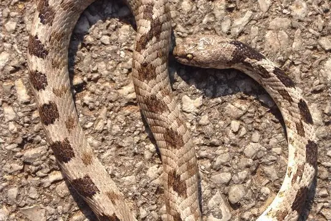
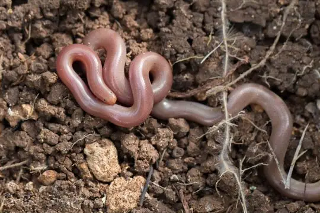
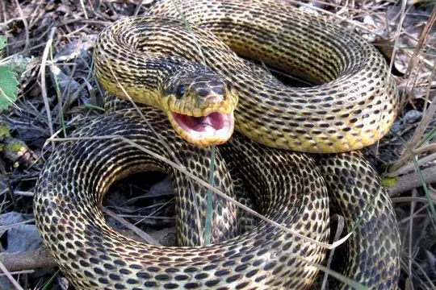
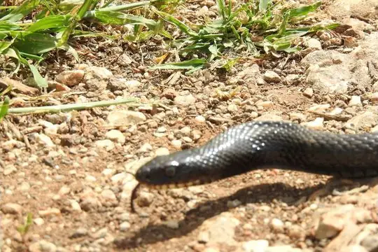
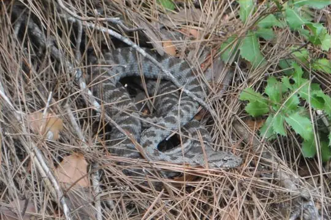
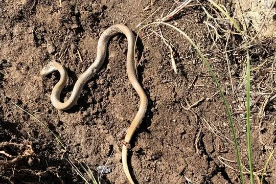
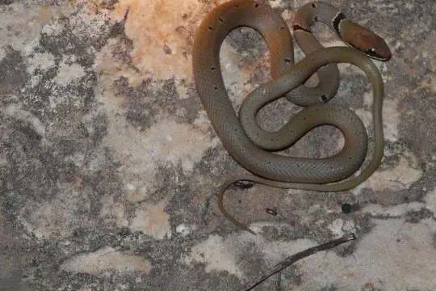
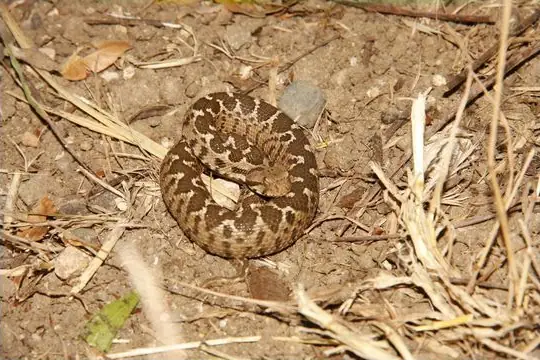

Snakes of Antalya Province
A province of Turkey
8 living snake species are recorded in Antalya Province, a province of Turkey, in SnakeList's data: 1 venomous and 7 non-venomous, from 3 families. 27 more are possible: recorded in Turkey without province detail.
- 8living species
- 1venomous
- 7non-venomous
- 3families
- 27more possible
Antalya Province is a province of Turkey. SnakeList records where snakes live by province, not by exact spot, so a species counted here may live in only part of it. The counts are unique living species; fossils, extinct species and introduced snakes are listed apart. All snakes of Turkey.
The 8 living species recorded in Antalya Province
Every living snake species SnakeList records in Antalya Province. Each is recorded somewhere in the province, not necessarily all over it.
- Asia Minor Dwarf Racer Eirenis modestus
- Asian Racer Hemorrhois nummifer
- Cat Snake Telescopus fallax
- East-Four-lined Ratsnake Elaphe sauromates
- Eurasian Blind Snake Xerotyphlops vermicularis
- Large Whip Snake (jugularis) Dolichophis jugularis
- Ottoman Viper Montivipera xanthina venomous
- Red Whip Snake (collaris) Platyceps collaris
No snake here matches that.
Possible here: country-level records only
SnakeList records these 27 species in Turkey without saying in which province, so each may or may not live in Antalya Province. They are not counted among the species recorded here.
- Alburzi Viper Vipera eriwanensis venomous
- Anatolian Meadow Viper Vipera anatolica venomous
- Black-headed Snake (melanocephalus) Rhynchocalamus melanocephalus
- Black-headed Snake (nigriceps) Telescopus nigriceps
- Bozanti Dwarf Racer Eirenis aurolineatus
- Collared Dwarf Snake Eirenis collaris
- Dark-headed Dwarf Racer (persicus) Eirenis persicus
- Dinnik's Viper Vipera dinniki venomous
- Eiselt's Dwarf Racer Eirenis eiselti
- Glossy-bellied Racer Platyceps ventromaculatus
- Hakkari Dwarf Racer Eirenis hakkariensis
- Hook-snouted Worm Snake Myriopholis macrorhyncha
- Levantine Dwarf Snake Eirenis levantinus
- Long-nosed Worm Snake Letheobia episcopus
- Narrow-striped Dwarf Snake Eirenis decemlineatus
- Nose-horned Viper Vipera ammodytes venomous
- Palestine Kukri Snake Rhynchocalamus satunini
- Red-Bellied Racer Dolichophis schmidti
- Roth's Dwarf Snake Eirenis rothii
- Sinai Dwarf Racer Eirenis coronelloides
- Striped Dwarf Snake Eirenis lineomaculatus
- Transcaucasian Long-nosed Viper Vipera transcaucasiana venomous
- Transcaucasian Rat Snake Zamenis hohenackeri
- Van Dwarf Racer Eirenis thospitis
- Wadi Racer Platyceps rhodorachis
- Western Dwarf Racer Eirenis occidentalis
- Walterinnesia morgani venomous
No snake here matches that.
Venomous and non-venomous
Venomous: 1 of 8Non-venomous: 7
1 is listed by SnakeList as dangerous to people: Ottoman Viper Montivipera xanthina.
Snake families
Living species recorded here, by family.
Biggest cities
The biggest cities in Antalya Province from SnakeList’s city list, biggest first (placed here by their map position). SnakeList has no records for the cities themselves.
Neighbouring provinces
Places in SnakeList that share a border with Antalya Province, with their living species.
- Burdur 1 species
- Isparta 1 species
- Konya Province 2 species
- Mersin Province 5 species
- Muğla 7 species
Most recorded worldwide
A global ranking, not a local one. These are the species here with research-grade iNaturalist records in the most places across their whole range (worldwide records). SnakeList has no counts of records within Antalya Province, so this says nothing about which snakes are commonest here.

Cat SnakeTelescopus fallax
Eurasian Blind SnakeXerotyphlops vermicularis
East-Four-lined RatsnakeElaphe sauromates
Large Whip Snake (jugularis)Dolichophis jugularis
Asian RacerHemorrhois nummifer
Asia Minor Dwarf RacerEirenis modestus
Red Whip Snake (collaris)Platyceps collaris
Ottoman ViperMontivipera xanthina
Who described them
The scientists who first described the species above, and when.
- Cat Snake Telescopus fallax -
- Eurasian Blind Snake Xerotyphlops vermicularis -
- East-Four-lined Ratsnake Elaphe sauromates -
- Large Whip Snake (jugularis) Dolichophis jugularis -
- Asian Racer Hemorrhois nummifer -
- Asia Minor Dwarf Racer Eirenis modestus -
- Red Whip Snake (collaris) Platyceps collaris -
- Ottoman Viper Montivipera xanthina -
Names and dates come from SnakeList’s reviewed species accounts; the others come from Wikidata (CC0) and are only shown if they pass basic checks.